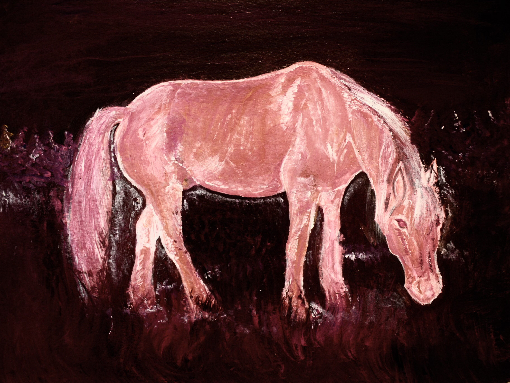

Pink pony, pink embrace
Was gifted acrylics by my lovely siblings and their partners for my birthday. (Much more practical to use at home than oil …). They’ve so far been turned into a pink Perflex and a reimagination of Mapplethorpe’s iconic “Embrace”, featuring Axel and myself.
